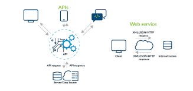
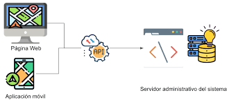

Imágenes



Las Web APIs (Interfaces de Programación de Aplicaciones Web) son conjuntos de reglas y protocolos que permiten a las aplicaciones de software comunicarse entre sí. Estas APIs se utilizan en el desarrollo web para acceder y manipular datos desde servicios externos, como redes sociales, sistemas de pago, bases de datos, entre otros.
Algunas de las tecnologías comunes utilizadas en las Web APIs incluyen REST (Transferencia de Estado Representacional), GraphQL, y SOAP (Protocolo Simple de Acceso a Objetos).
Estas tecnologías permiten a los desarrolladores integrar funcionalidades de terceros en sus aplicaciones web, lo que resulta en una mayor flexibilidad y capacidad de innovación.